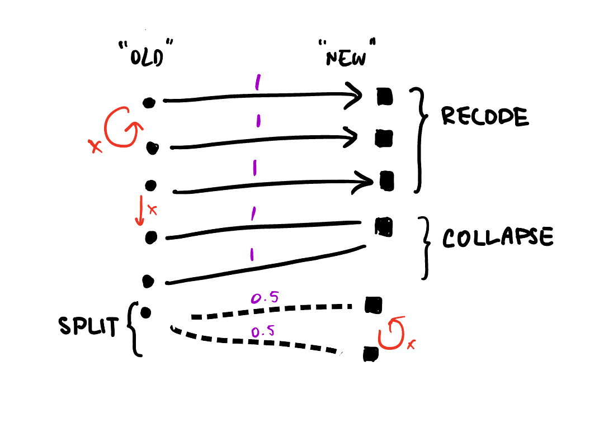
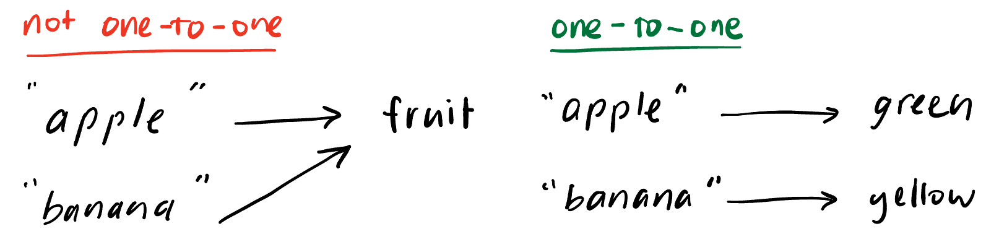
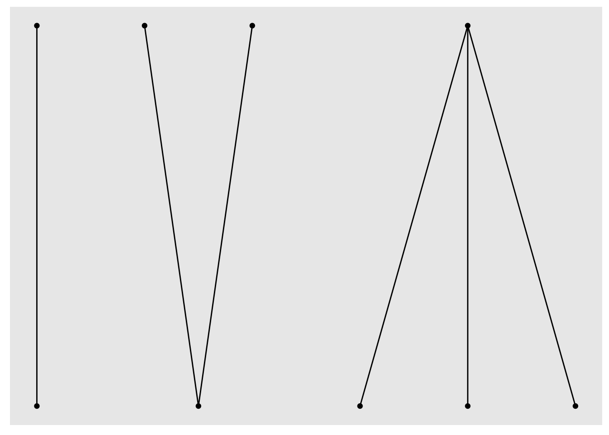
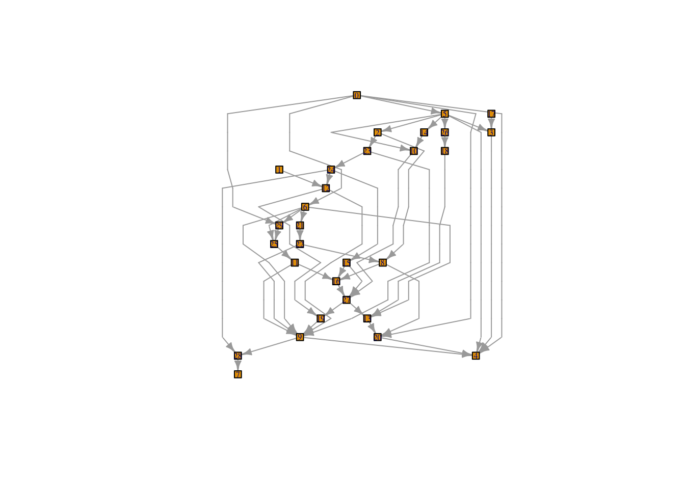
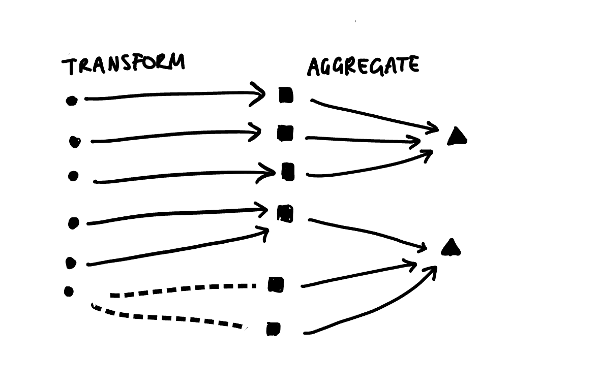
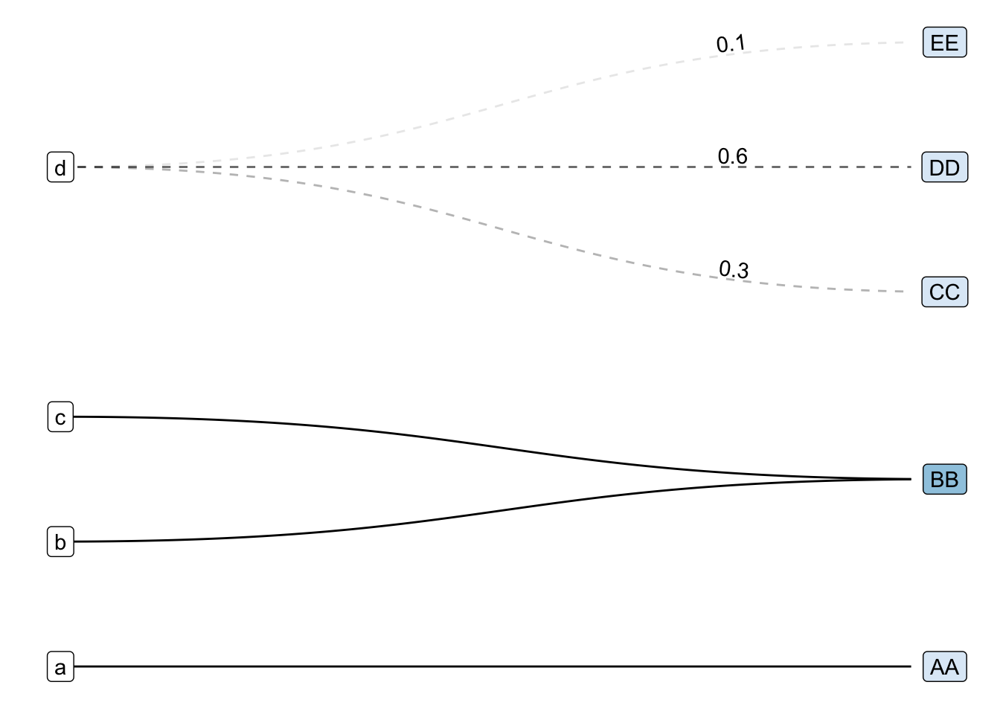
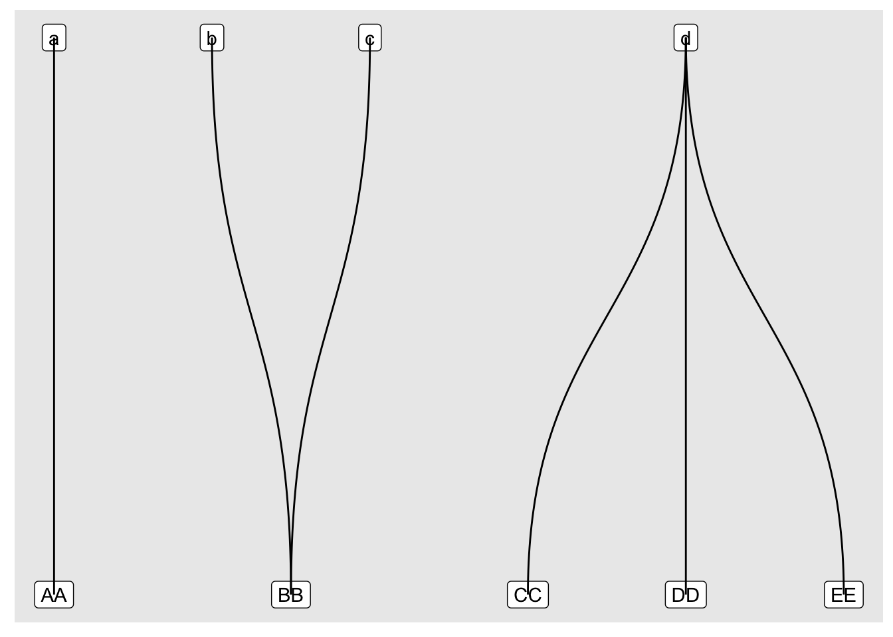
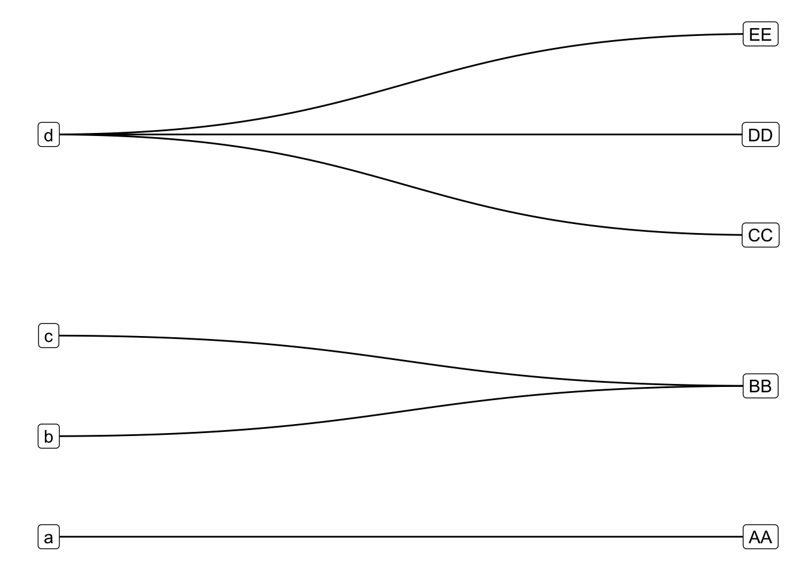

library(forcats)
x <- factor(c("apple", "bear", "banana", "dear"))
fruit_levels <- c(fruit = "apple", fruit = "banana")
fct_recode(x, !!!fruit_levels)[1] fruit bear fruit dear
Levels: fruit bear dearI promise this post is about making ggplots, but first some background. I’ve been working on a new approach to validating data pipelines which involve recoding or redistributing values between categories. The core idea of approach is to validate Mapping Objects instead of, or in addition, to the data itself. For more details about the appraoch see this interview or the docs for the {xmap} package (pronounced “crossmap”).
Mapping objects can include named vectors or lists, as well as lookup tables and crosswalks – basically anything that encodes instructions of the form “category A connects to category B”. For instance, when using forcats::fct_recode(), you might store the new = old mappings as a named vector specifying which old level “connects” to which new level as below:
library(forcats)
x <- factor(c("apple", "bear", "banana", "dear"))
fruit_levels <- c(fruit = "apple", fruit = "banana")
fct_recode(x, !!!fruit_levels)[1] fruit bear fruit dear
Levels: fruit bear dearNow given a particular mapping object, you might want to verify that it has certain properties before using it. For example, when renaming columns with dplyr::rename(...), where the … takes new = old pairs, you probably only want 1-to-1 relations. No 2 old columns should get the same new name, and a single old column being renamed into 2 new columns is just duplicating data.
Of course this is a somewhat trivial example that you could quickly check by looking at the code, but as mappings get more complex and involve more categories, it becomes less obvious how to ensure you’re actually performing the intended transformations. Add a combination of recoding, aggregating and disaggregating numeric counts (e.g. occupation level statistics, or population by administrative area) to your data wrangling pipeline and you’re only one coding mistake away from accidentally (and often silently) dropping or corrupting some of your data (trust me, I’ve done it before).
Now, where do graphs come in? Well, assertive programming is a good preventive measure against funny business in your data wrangling pipelines. However, it’s not always obvious what assertions you should be checking. In the case of recoding or redistributing data, it turns out that thinking of mapping objects as directed bipartite weighted graphs is quite informative for designing assertions.
As a quick reminder, bipartite graphs are graphs where the nodes or vertices can be split into two disjoint sets, and edges or links are only allowed between the two sets, not within. The weighted part refers to the addition of a numeric attribute to each link. When the graph represents recoding or redistributing (i.e. collapsing or splitting) values, weights will be between 0 and 1. I call this graph-based representation a Crossmap.

With this representation we can identify assertions like if we only want 1-to-1 relations, we should check that the old and new sets have the same number of unique elements:

Notice that this condition doesn’t hold in the example above, since that is a many-to-one relation.
# old set has 2 unique elements
unique(unname(fruit_levels))[1] "apple" "banana"# new set has only 1 unique element
unique(names(fruit_levels))[1] "fruit"You can take these assertions and check them using existing assertive programming tools like {assertr} and {validate} or even just using {testthat}. Alternatively, the {xmap} (crossmap) package wraps these conditions into assertive functions that you can call before using a mapping object:
library(xmap)
fruit_color <- c(green = "apple", yellow = "banana") |>
xmap::verify_named_all_1to1()
fct_recode(x, !!!fruit_color)[1] green bear yellow dear
Levels: green yellow bear dearOk, so what else can we do with these graph representations? Well, wouldn’t it be nice if could easily summarise and visualise mapping objects? especially more complex ones?… and thus began my journey down the rabbit hole of graph data structures and ggplot2 extensions.
I’ll spare you the lengthier rabbit hole detours for now (skip ahead for some failed experiments), but I’ve landed on using a combination of {ggraph}, {tidygraph} and {igraph} to power the autoplot() method I want to add to the {xmap} package. I’m still wrapping my head around ggproto and how to implement new Geoms and Stats, but here’s what I’ve learnt so far.
Before we begin, a little context:
{igraph} provides R bindings to the core igraph network analysis library written in C. It has its own class for graphs (igraph) and offers a lot of graph analysis and layout algorithms that are meant much more complex graphs than a humble bipartite representation of data recoding objects.{tidygraph} provides an tidy API for graph/network manipulation, including the tbl_graph class which is a thin wrapper around an igraph object.{ggraph} is a ggplot2 extension which lets you turn graphs (tbl_graph) into ggplots using layouts, nodes and edges.And a note on the types of mappings I’m trying to plot. I think the crossmap format is particularly useful when you are working with combinations of one-to-one, one-to-many, many-to-one and many-to-many relations, rather than just one type of relation. For example, if you’re just doing one-to-one recodings, a two-column look up table is a much more space and time efficient summary method.
With that in mind, let’s see how far I got plotting the following simple crossmap that connects some nodes with lowercase names with ones with uppercase names with :
edges_abc <- tibble::tribble(
~lower, ~upper, ~share,
"a", "AA", 1, # one-to-one
"b", "BB", 1, # one-FROM-many / many-TO-one
"c", "BB", 1,
"d", "CC", 0.3, # one-to-many
"d", "DD", 0.6,
"d", "EE", 0.1
)library(ggraph)
library(tidygraph)To start with we need to convert our table of edges into a graph object. Luckily {tidygraph} handles this for us with ease:
(tg_abc <- edges_abc |>
as_tbl_graph())# A tbl_graph: 9 nodes and 6 edges
#
# A rooted forest with 3 trees
#
# Node Data: 9 × 1 (active)
name
<chr>
1 a
2 b
3 c
4 d
5 AA
6 BB
# … with 3 more rows
#
# Edge Data: 6 × 3
from to share
<int> <int> <dbl>
1 1 5 1
2 2 6 1
3 3 6 1
# … with 3 more rowsFrom here we just need to generate a layout and add some geom_edge_*s and geom_node_*s.
What’s a layout you ask? I had the same question. According to vignette("Layouts", package = "ggraph"):
In very short terms, a layout is the vertical and horizontal placement of nodes when plotting a particular graph structure. Conversely, a layout algorithm is an algorithm that takes in a graph structure (and potentially some additional parameters) and return the vertical and horizontal position of the nodes.
Ok, so we just need to pick a sensible layout algorithm, and lucky for me ggraph offers the option of using the igraph::layout_as_bipartite() algorithm. But wait a minute, apparently I haven’t supplied a bipartite graph? And what’s this types argument?
tg_abc |>
ggraph(layout = "igraph", algorithm = "bipartite")Error in handle_vertex_type_arg(types, graph): Not a bipartite graph, supply `types' argument or add a vertex attribute named `type'type of graph, maybe too special.It turns out that igraph only recognises graphs as bipartite if you add a logical type attribute to each of the vertices. It’s not clear to me if there’s an easy way to add this attribute once you’ve jumbled all your to and from nodes together into the Node Data component of a tidygraph tbl_graph.
A somewhat cumbersome workaround is to coerce the edge list into a matrix first and then use the as_tbl_graph.matrix() method which handles the creation of the type attribute. Again lucky for me, I’ve been experimenting with this in the xmap package (because matrix representations also reveal useful assertions but I digress):
library(xmap)
(mtx_abc <- edges_abc |>
as_xmap_df(from = lower, to = upper, weights = share) |>
xmap_to_matrix())4 x 5 sparse Matrix of class "dgCMatrix"
upper
lower AA BB CC DD EE
a 1 . . . .
b . 1 . . .
c . 1 . . .
d . . 0.3 0.6 0.1The function currently returns a sparse matrix by default, but we can easily switch that into a base matrix that as_tbl_graph() can handle:
(tgm_abc <- mtx_abc |>
as.matrix() |>
as_tbl_graph())# A tbl_graph: 9 nodes and 6 edges
#
# A rooted forest with 3 trees
#
# Node Data: 9 × 2 (active)
type name
<lgl> <chr>
1 FALSE a
2 FALSE b
3 FALSE c
4 FALSE d
5 TRUE AA
6 TRUE BB
# … with 3 more rows
#
# Edge Data: 6 × 3
from to weight
<int> <int> <dbl>
1 1 5 1
2 2 6 1
3 3 6 1
# … with 3 more rowsNotice that we now have a logical type attribute indicating the two disjoint lower and upper node sets. Let’s try again with the bipartite layout algorithm:
tgm_abc |>
ggraph(layout = "igraph", algorithm = "bipartite") +
geom_node_point() +
geom_edge_link()
Success! We have something that loosely resembles my earlier hand-drawn sketch. So now we can move on to customisation using the familiar layered ggplot grammar and the extra features offered by ggraph’s geom_edge_* and geom_node_* families.
But before that, maybe we don’t need to mess around with converting to matrices after all.
As a general rule, I like things to be efficient and elegant, and the edgelist to matrix detour is neither. So, I started to dig around in the igraph and tidygraph documentation and code base to see if I could find a less clunky way of generating a bigraph layout.
Now, you have to remember that I’m not a graph theorist, or network researcher so a lot of the documentation was basically gibberish to me. Then there’s the added layer of traversing between ggraph and igraph layout functions (via tidygraph?), and untangling the relationship between the tbl_graph and igraph classes.
Nevertheless, I eventually stumbled across this little breadcrumb in the igraph::layout.bipartite() manual entry:
The layout is created by first placing the vertices in two rows, according to their types. Then the positions within the rows are optimized to minimize edge crossings, using the Sugiyama algorithm (see
layout_with_sugiyama()).
At first glance, the examples in igraph::layout_with_sugiyama() don’t bear much resemblance to the bipartite graph I sketched earlier. Take this example:
library(igraph, quietly = TRUE)
## Another example, from the following paper:
## Markus Eiglsperger, Martin Siebenhaller, Michael Kaufmann:
## An Efficient Implementation of Sugiyama's Algorithm for
## Layered Graph Drawing, Journal of Graph Algorithms and
## Applications 9, 305--325 (2005).
ex <- graph_from_literal(
0 -+ 29:6:5:20:4,
1 -+ 12,
2 -+ 23:8,
3 -+ 4,
4,
5 -+ 2:10:14:26:4:3,
6 -+ 9:29:25:21:13,
7,
8 -+ 20:16,
9 -+ 28:4,
10 -+ 27,
11 -+ 9:16,
12 -+ 9:19,
13 -+ 20,
14 -+ 10,
15 -+ 16:27,
16 -+ 27,
17 -+ 3,
18 -+ 13,
19 -+ 9,
20 -+ 4,
21 -+ 22,
22 -+ 8:9,
23 -+ 9:24,
24 -+ 12:15:28,
25 -+ 11,
26 -+ 18,
27 -+ 13:19,
28 -+ 7,
29 -+ 25
)
layers <- list(
0, c(5, 17), c(2, 14, 26, 3), c(23, 10, 18), c(1, 24),
12, 6, c(29, 21), c(25, 22), c(11, 8, 15), 16, 27, c(13, 19),
c(9, 20), c(4, 28), 7
)
layex <- layout_with_sugiyama(ex, layers = apply(
sapply(
layers,
function(x) V(ex)$name %in% as.character(x)
),
1, which
))
origvert <- c(rep(TRUE, vcount(ex)), rep(FALSE, nrow(layex$layout.dummy)))
realedge <- as_edgelist(layex$extd_graph)[, 2] <= vcount(ex)
plot(layex$extd_graph,
vertex.label.cex = 0.5,
edge.arrow.size = .5,
vertex.size = ifelse(origvert, 5, 0),
vertex.shape = ifelse(origvert, "square", "none"),
vertex.label = ifelse(origvert, V(ex)$name, ""),
edge.arrow.mode = ifelse(realedge, 2, 0)
)
But wait, let’s take a closer look at the documentation (emphasis mine):
This layout algorithm is designed for directed acyclic graphs where each vertex is assigned to a layer. Layers are indexed from zero, and vertices of the same layer will be placed on the same horizontal line. The X coordinates of vertices within each layer are decided by the heuristic proposed by Sugiyama et al. to minimize edge crossings.
the usage:
layout_with_sugiyama(
graph,
layers = NULL,
hgap = 1,
vgap = 1,
maxiter = 100,
weights = NULL,
attributes = c("default", "all", "none")
)and the layers argument:
- layers
A numeric vector or NULL. If not NULL, then it should specify the layer index of the vertices. Layers are numbered from one. If NULL, then igraph calculates the layers automatically.
Are you following? Not quite? Well, what if I told you that directed bipartite graphs are just a special kind of directed acyclic graph?
Then, we’ve found a way to bypass the type requirement for using layout_as_bipartite(), which as far as I can tell probably just converts the logical type attribute into a numeric vector (i.e. 0 or 1) assigning a “layer index” to the two types of nodes, and then calls layout_with_sugiyama().
Translating this back to ggraph::create_layout()/ggraph() syntax we can get around our earlier error without fiddling with matrices by letting layout_with_sugiyama() work out the disjoint lower and upper sets:
tg_abc |>
ggraph(layout = "igraph", algorithm = "sugiyama") +
geom_node_point() +
geom_edge_link()
Another benefit of using the Sugiyama algorithm directly is that it lends itself nicely to plotting multi-step transformations as directed multipartite graphs. We would just need to calculate a “layer index” for each step and let the ggraph/tidygraph handle the rest. Instead of just two disjoint sets, we could have three or more classification schemes that we transform our data between. For example, we could extend my earlier hand draw example by adding an aggregation step:

Now, for the grand reveal:
tg_abc |>
## calculating edge properties
activate(edges) |>
mutate(frac_weight = ifelse(share < 1, TRUE, FALSE)) |>
mutate(edge_linetype = ifelse(frac_weight, "dashed", "solid")) |>
mutate(edge_label_pos = ifelse(frac_weight, 0.8, 0.2)) |>
## calculating node properties
activate(nodes) |>
mutate(n_from = centrality_degree(mode = "in"),
in_from = n_from == 0,
collapse = n_from > 1) |>
## now we plot...
ggraph::ggraph(layout = "sugiyama") +
## unit weight links,
ggraph::geom_edge_diagonal(
aes(edge_linetype = I(edge_linetype),
edge_alpha = share,
filter = !frac_weight),
end_cap = circle(6, 'mm'),
show.legend = FALSE
) +
## frac weight links,
ggraph::geom_edge_diagonal(
aes(edge_linetype = I(edge_linetype),
edge_alpha = share,
filter = frac_weight,
label = share,
label_pos = edge_label_pos,
),
end_cap = circle(6, 'mm'),
show.legend = FALSE,
angle_calc = "along",
label_dodge = grid::unit(2, "mm")
) +
## from nodes,
ggraph::geom_node_label(aes(label = name,
filter=in_from),
) +
## to nodes,
ggraph::geom_node_label(aes(label = name,
fill = collapse,
filter=!in_from
),
show.legend = FALSE,
) +
scale_fill_brewer() +
## and finally modify coordinates, scale and theme
coord_flip() +
scale_y_reverse() +
theme_minimal() +
ggraph::th_no_axes()
The first modification I made was to swap the basic geom_node_point() and geom_edge_link() for their fancier cousins geom_node_label() and geom_edge_diagonal():
tg_abc |>
ggraph(layout = "sugiyama") +
geom_node_label(aes(label = name)) + # was: geom_node_point()
geom_edge_diagonal() # was: geom_edge_link()
Then I shuffled the layer order and tweaked the coordinates, scales and theme:
tg_abc |>
ggraph(layout = "sugiyama") +
geom_edge_diagonal() +
geom_node_label(aes(label = name)) +
coord_flip() +
scale_y_reverse() +
theme_minimal() +
ggraph::th_no_axes()
The final set of modifications required a bit of set up and rely heavily on the very useful but lightly documented filter aesthetic offered in all ggraph geoms. If you unfold the code above in Finally, a ggplot, you’ll see that I calculated a bunch of variables to partition the edges (by having or not having frac_weight) and nodes (by being in_from or in the target set). I then mapped these variables to various aesthetics in standard ggplot style.
That’s it for today. If you want more ggplot2 stories keep reading, otherwise stay tuned for updates from the next phase of my journey to add autoplot() to the xmap package: Geoms, Stats and autoplot, Oh My!
Obviously I’m not the first person to try and plot bipartite graphs, but navigating the wonderfully rich R and ggplot2 ecosystems to find what I needed proved much more difficult than I anticipated. Here are selections of my experiments using geoms from various ggplot2 extension packages:


Attempts at plotting bipartite graphs using {ggalluvial}, {ggsankey} and {ggbump}.
As you can see, my most successful Frankenstein was the {ggbump} graphic. Young, naive, and too intimidated to even think about reading the “Extending ggplot2” vignette, I shoved a creative combination of geom_text(), geom_label(), ggbump::geom_sigmoid() and far too many ad-hoc computations in a wrapper function and hoped for the best. Unfortunately, I soon ran into problems because as Thomas Lin Pedersen notes in the {ggraph} package:

I made some truly unsightly ggplots with my Frankenstein wrapper function including this monstrosity:

After which, I did not stop and rethink my approach, but came up with this workaround:

On the surface, this workaround looks pretty good, but don’t even think about resizing it, and against all principles of reproducibility, the image above is actually a screenshot of a ggplot with two tables underneath it. I couldn’t work out how to get patchwork and GridExtra to hold onto my two tables with top alignment, and so I just placed a ggplot chunk on top of a knitr::kable() chunk and took a screenshot…
It turns out if you squint hard enough, almost anything can be a graph. This can be both useful and frustrating, but definitely lead me to a few realisations:
{ggsankey}, {ggalluvial} and {ggparallel} all seem to expect a meaningful aesthetic mapping for the edge width (e.g. flow amount)
{ggbump} produces bump charts that look a lot like directed graphs, but there’s some mental gymnastics required to work out what the nodes, edges and attributes are. ggbump::geom_sigmoid() can probably be thought of as a more rigid variant of ggraph::geom_edge_diagonal()
{ggdag}, {ggbipart}, {ggnet2} also offer plots that look a bit like what I’m after, but I couldn’t quite connect the dots between their network / DAG syntax and my use case.
{multigraph} offers functions for plotting two-mode data, but doesn’t seem to use ggplot2 making it difficult to customise the appearance of the plots.
{tidygraph}) from the visualisation (i.e {ggraph}). Thanks Thomas Lin Pedersen!And on that note, thanks for reading! Please feel free to @me on Twitter, Mastodon, or GitHub with suggestions, corrections and/or ideas.
@online{tzuk2023,
author = {Tzuk, Omer},
title = {Visualising Data Recoding as {Bipartite} {Graphs} Using
Igraph, Tidygraph, Ggraph and Ggplot2},
date = {2023-05-04},
url = {https://omertzuk.github.io/posts/xmap-ggraph-bipartite/},
langid = {en}
}